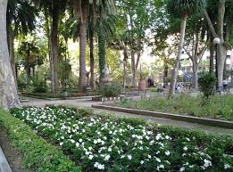
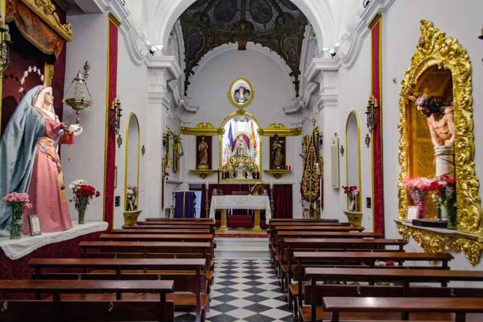
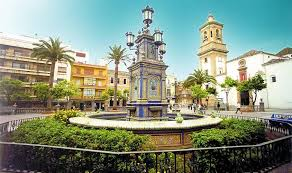
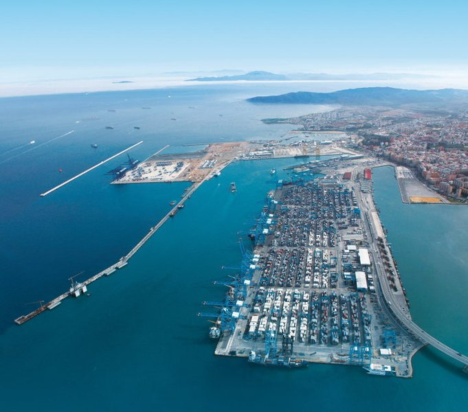
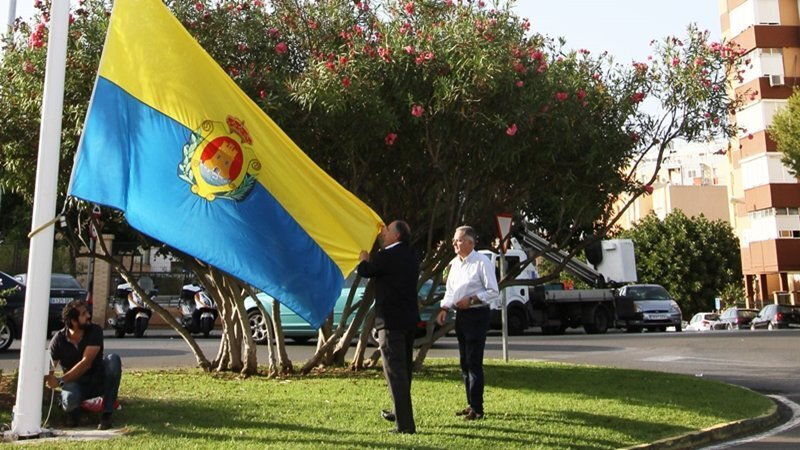

Lugares de Interés
Parque María Cristina
Este parque es uno de los espacios verdes más importantes de Algeciras. Fue inaugurado en 1926 y es un lugar ideal para pasear, relajarse y disfrutar de la naturaleza.
Destaca por su diseño clásico, con fuentes, estatuas y una gran variedad de plantas y árboles.

Ubicación: Parque María Cristina, Av. Blas Infante, 11202 Algeciras, Cádiz
Capilla de Nuestra Señora de Europa
Esta capilla, ubicada en el Parque del Centenario, es un símbolo religioso e histórico de Algeciras.
Está dedicada a la Virgen de Europa, patrona de la ciudad y de Gibraltar.

Ubicación: C. Radio Algeciras, 1A, 11201 Algeciras, Cádiz
Plaza Alta
La Plaza Alta es el corazón histórico y social de Algeciras. Es un lugar lleno de vida, rodeado de edificios históricos y comercios.
En el centro de la plaza se encuentra una fuente monumental, y alrededor hay terrazas donde puedes tomar algo mientras disfrutas del ambiente.

Ubicación: Pl. Alta, 1, 11201 Algeciras, Cádiz
Puerto de Algeciras
Aunque no es un lugar turístico en el sentido tradicional, el puerto de Algeciras es uno de los más importantes de Europa y del mundo.
Es fascinante ver la actividad marítima y el trasiego de mercancías y pasajeros. Además, desde aquí se pueden tomar ferris hacia ciudades del norte de África, como Tánger o Ceuta.

Ubicación: Bahía de Algeciras
Últimas Noticias
Detenidos los autores de varios actos vandálicos contra el patrimonio de Algeciras
La colaboración entre la Policía Local y el Cuerpo Nacional de Policía ha resultado en la detención de varias personas por actos vandálicos contra el patrimonio municipal. En un primer incidente, una agente de la Policía Local fuera de servicio detectó a dos ciudadanos franceses destrozando seis maceteros y un bolardo en el centro de la ciudad, lo que llevó a su detención por parte de la Policía Nacional. En un segundo caso, agentes de la Policía Nacional interceptaron a tres personas, dos de ellas menores, robando piezas de vallado metálico de una zona verde municipal. Los daños causados en ambos sucesos ascienden a 2.000 euros. Las autoridades han agradecido la rápida actuación policial y han pedido la colaboración ciudadana para reportar actos vandálicos llamando al 092.

Detenida en Algeciras por una estafa piramidal de inversiones en criptomonedas
La Policía Nacional ha detenido en Algeciras a una mujer como presunta autora de un delito de estafa relacionado con una plataforma fraudulenta de inversiones en criptomonedas. Tras un año y medio de investigación, se descubrió que la detenida operaba desde un local propio, captando inversores con la promesa de beneficios a través de la visualización de videos en redes sociales. Ocho personas resultaron afectadas, con un perjuicio económico de 14.800 euros. La investigación reveló que el esquema funcionaba como una estafa piramidal, dependiendo de la incorporación de nuevos inversores. La mujer, quien inicialmente también se presentó como víctima, fue detenida el 19 de febrero de 2025 y puesta en libertad a la espera de su citación judicial. Las autoridades advierten sobre la importancia de verificar la legalidad de las inversiones y desconfiar de promesas de altas rentabilidades.